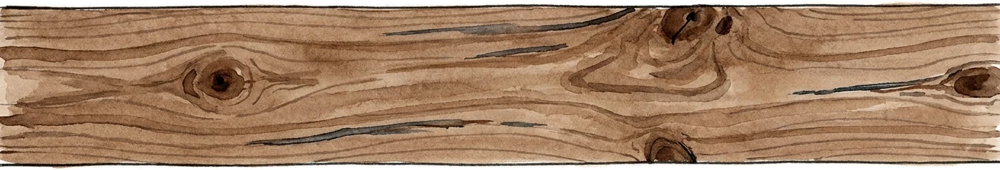
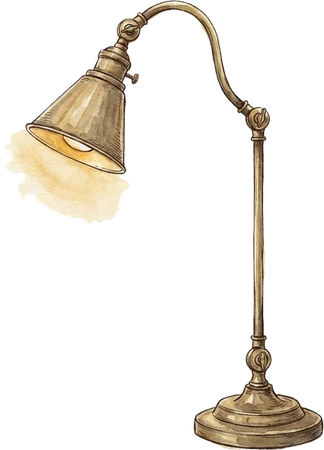

Here’s your plan.
4-day streak · 23 topics this week — your best yet.
- 1Warm up10 quick questions · the ones you fumbled2 min
- 2Stave 3: Poverty & GenerosityContinue · English Literature — nearest exam15 min
- 3Embedded SystemsRefresh · Computer Science — 3 weeks stale8 min
the one thing to actually do today
Your subjects


↑Select a subject